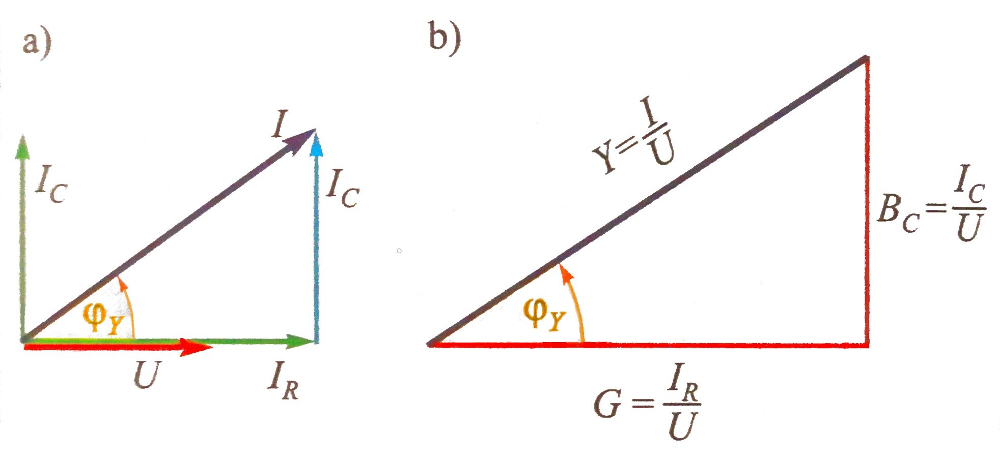

Na slici serijski spoj otpora i induktiviteta (s oznakama
efektivnih vrijednosti struje i napona). Kod serijskog
spoja otpora struja je zajednička, a ukupni napon je
zbroj napona na otporima.
Kod serijskog spoja raznih vrsta otpora (ovdje su to radni
otpor R i induktivni otpor XL), naponi su međusobno
pomaknuti u fazi, pa se ne može jednostavno zbrojiti njihove
efektivne vrijednosti, nego treba uzeti u obzir i njihov fazni
pomak. U tu svrhu se crta vektorski prikaz napona (vektorski
dijagram), i naponi se zbrajaju vektorski.
Vektorski dijagram započinjemo crtati sa zajedničkom veličinom,
a to je u serijskom spoju struja. Vektor struje I uzima
se s početnim kutem 0, pa se prema njemu postavljaju vektori napona
na induktivitetu UL i napon na otporu UR (slika).
Napon na otporu UR u fazi je sa strujom I, dok
napon na induktivitetu UL prethodi struji za 90°.
Vektor napona izvora U jednak je vektorskom zbroju napona
na otporu UR i induktivitetu UL.
Ova tri napona čine pravokutni trokut pa vrijedi:
$$ U^2= U^2_R + U^2_L $$
Kut napona U prema struji je pozitivan, tj. ukupni
napon prethodi struji za neki kut \( \; φ \; \; (0° \lt φ \lt 90°) \).
Dijeljenjem svake stranice trokuta napona s I, dobiva se
sličan pravokutni trokut s katetama jednakim radnom otporu R i
induktivnom otporu XL (slika). On se naziva tokut otpora.
Hipotenuza ovog trokuta jednaka je omjeru ukupnog napona U
i struje I spoja. Taj omjer ne predstavlja nikakav stvarni
otpor, pa se naziva prividni otpor (ili impendancija) i
označava sa Z.
$$ Z^2= R^2 + X^2_L $$
Kut φ (između R i Z) naziva se i kut impendancije.
Pomnože li se stranice trokuta napona sa strujom I,
dobiva se sličan pravokutni trokut u kojemu se katete jednake
radnoj snazi P i jalovoj snazi QL. Taj trokut naziva
se trokut snage (slika).
Hipotenuza trokuta snage jednaka je umnošku ukupnog napona U i
struje I spoja. Umnožak \(UI\) ne predstavlja snagu ni
na jednom elementu kruga, pa se naziva prividna snaga i
označava se sa S. Prividna snaga izražava se u
voltamperima (VA).
Trokut daje odnos prividne, radne i jalove snage
$$ S^2= P^2 + Q^2_L $$
Omjer radne snage P i prividne snage S naziva se faktor snage
spoja (još se označava i kao \( \cos φ \))
Slika prikazuje serijski spoj otpora R i kapaciteta C,
kroz koje izvor napona U tjera struju I.
U vektorskom dijagramu (slika) vektor struje I
uzimamo referentnim (s početnim kutem nula). Napon na otporu
UR u fazi je sa strujom, a napon na kapacitetu
UC zaostaje u fazi iza struje za 90°.
Vektorski zbroj napona na otporu UR i napona na
kapacitetu UC daje napon izvora U. Ovi naponi
čine pravokutni trokut iz kojeg proizlazi da je
$$ U^2= U^2_R + U^2_L $$
Ovdje je kut napona U prema struji negativan, tj. napon U
zaostaje iza struje za kut \( \; φ \; \; (-90° \lt φ \lt 0°) \).
U trokut otpora, dobivenom iz trokuta napona (slika),
zbog negativnog kuta φ kapacitivni otpor XC je
ispod radnog otpora R (nasuprot induktivnog otpora
XL u trokutu otpora RL-kruga).
Prividni, radi i reaktivni (kapacitivni) otpor
povezani su i ovdje Pitagorinim poučkom
$$ Z^2= R^2 + X^2_C $$
U trokutu snage (slika), zbog negativnog kuta φ
kapacitivna jalova snaga QC je ispod radne
snage P, suprotno od induktivne snage QL
u trokutu snage RL-kruga.
Prividna, radna i jalova (kapacitivna) snaga
povezane su također putem Pitagorina poučka
$$ S^2= P^2 + Q^2_C $$
Faktor snage i ovdje se, kao i u bilo kojem spoju,
računa se kao omjer radne i prividne snage \( (P/S) \).
U serijskom RLC-krugu (slika) uz radni otpor R su
induktivni otpor XL i kapacitivni otpor XC.
U vektorskom dijagramu (slika), vektor napon na otporu
UR u fazi je s vektorom struje I,
koju uzimamo kao referentnu (s početnim kutem nula).
Napon na induktivitetu UL prethodi struji za 90°,
a napon na kapacitetu UC istodobno zaostaje iza
struje za 90°, pa je kut između ovih napona 180°.
Kod paralelnog spoja otpora R i induktiviteta L (slika),
napon je isti na oba elementa, a ukupna struja je zbroj
struja pojedinih elemenata. Pri zbrajanju treba uzeti u
obzir fazni pomak između struja. U tu svrhu se koristi
njihov vektorski prikaz.
U vektorskom prikazu (slika) vektor napona U, (zajednički
za oba elementa), uzimamo kao referentan i crtamo s kutem
jednakim nuli.
Struja kroz otpor \(I_R\) u fazi je s naponom, a
struja kroz induktivitet \(I_L\) zaostaje iza
napona za 90°.
Vektor struje I je zbroj vektora struja \(I_R\)
i \(I_L\). Ova tri vektora čine pravokutni trokut gdje je
$$ I^2= I^2_R + I^2_L $$
Dijeljenjem stranica trokuta struja s naponom U da je sličan
pravokutni trokut (slika), čije su katete jednake recipročnim
vrijednostima radnog i induktivnog otpora, tj.
vodljivostima elemenata.
Označavamo ih s \( G = I_R / U = 1 / R \) (radna vodljivost) i
\( B_L = I_L / U = 1 / X_L = 1 / ωL \) (induktivna vodljivost),
a taj trokut nazivamo trokut vodljivosti.
Hipotenuza ovog trokuta, jednaka je omjeru ukupne struje i napona
\((I/U)\), ne predstavlja vdljivost nijednog elementa, pa se
naziva prividna vodljivost (ili admitancija)
i označava se s Y. Pritom vrijedi
$$ Y^2= G^2 + B^2_L $$
Admitancija Y predstavlja vodljivost cijelog spoja i jednak je
recipročnoj vrijednosti impendancije Z paralelnog RL-spoja
\( (Y = 1/Z) \).
Kut ukupne struje I prema naponu U naziva se
kut admitancije i označava s \(φ_Y\). On je
po iznosu jednak, a predznakom suprotan kutu impendancije
$$ φ_Y=-φ $$
Ukupna struja I ovdje zaostaje iza napona, pa je kut
admitancije negativan \( (-90° \lt φ_Y \lt 0°) \). To znači da
je kut impendancije φ (tj. kut napona U prema struji I) pozitivan,
što znači da napon U prethodi struji I (to je opće svojstvo induktivnog spoja).
Snaga paralelnog RL-spoja računa se na slijedeći način:
Kod paralelnog spoja otpora R i kapaciteta C (slika) napon U isti
je na oba elementa. Slika prikazuje odnos vektora napona i struje.
Struja kroz otpor \(I_R\) u fazi je s naponom U, a struja
kroz kapacitet \(I_C\) prethodi naponu za 90°.

Vektor struje I je zbroj vektora struje \(I_R \; i \; I_C\).
Ova tri vektora čine pravokutni trokut gdje je
$$ I^2=I^2_R + I^2_C $$
Dijeljenjem stranica trokuta struja s naponom U
dobiva se sličan trokut nazvan trokut vodljivosti.
Katete ovog trokuta (slika) jednake su radnoj vodljivosti G
\( (G=I_R/U=1/R) \) i kapacitivnoj vodljivosti BC
\( (B_C=I_L/U=1/X_C=ωC) \), a hipotenuza je jednaka prividnoj
vodljivosti spoja Y, gdje je
$$ Y^2=G^2 + B^2_C $$
Ukupna struja I ovdje prethodi naponu U, pa je kut admitancije
pozitivan \( (0° \lt φ_Y \lt 90°) \). To znači da je kut
impendancije φ (tj. kut napona U prema struji I) negativan,
što znači da napon zaostaje za strujom (to je opće svojstvo kapacitivnog
spoja). Snaga paralelnog RC-spja računa se na slijedeći način:
U paralelnom RLC-krugu (slika) uz radni otpor R
paralelno su spojeni i oba tipa reaktivnih otpora,
induktivni otpor \(X_L\) i kapacitivi otpor \(X_C\).
U vektorskom dijagramu (slika), vektori struje kroz
otpor \(I_R\) u fazi je s vektorom napona U, koji
uzimamo kao referentan (s početnim kutem nula).
Struja kroz induktivitet \(I_L\) prethodi naponu za 90°,
dok struja kroz kapacitet \(I_C\) zaostaje iza napona za
90°, pa je kut između ovih struja 180°.